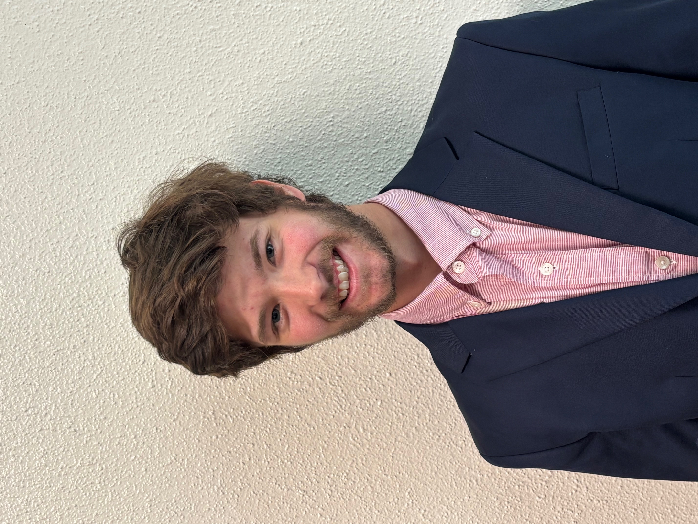

About Me – Charlie Tharin
My name is Charlie Tharin. I created this website as a way to record and document my various interests and projects.
While I'm not an expert in any field, I hope my hobbies and creations entertain, but also serve as a way to learn from my own experiences.
I love 3D printing, scale-modeling, remote control, making music/art and creating things.
Education
University of Georgia, Athens, GA
Bachelor of Physics, Bachelor of Mechanical Engineering, Spring 2028
GPA: 4.00/4.00
Work Experience
Lanier Real Estate Management, Summer 2024
- Managed real estate documents for over 40 homeowners associations and nearly 100 employees
- Created organizational system to streamline operations for a multi-million dollar company
Additional Experience
Zhao Nano Lab – Research Assistant, Jan 2025–present
- Engineered a device that automates the collection of laser spectra (ongoing)
Georgia Governor's Honors Program – Physics Alumni, Summer 2023
- Selected from over 3,000 applicants for a residential summer enrichment program for gifted high school students
- Conducted and published novel research on toroidal propellers; details available on my website
STEAM Dreams – Personal Website & Blog, 2022–present
- 2000+ collective views of custom-made STL files on Thingiverse
- Projects include: homemade foundry, custom hydrofoil fabrications, zen garden sand table
Compassion Christian Church – Kids Team Serve Team Leader & Tech Manager, 2021–present
- Volunteered 150+ hours with elementary-aged children
- Supervised A/V Production for over 100 people on a weekly basis
Involvement
UGA Formula EV Team – Suspension Systems Engineer, Oct 2024–present
- Optimized functional FSEA car parts through Finite Element Analysis
Chamber Music Society, Oct 2024–present
- Performed violin in chamber quartet for audiences up to 150 people